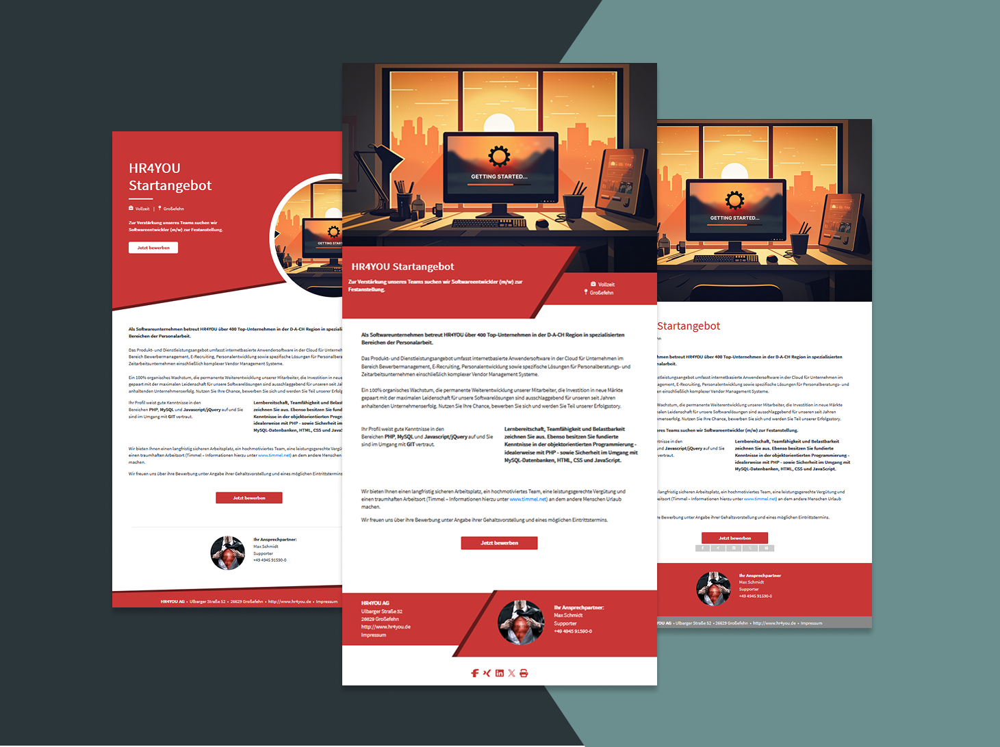
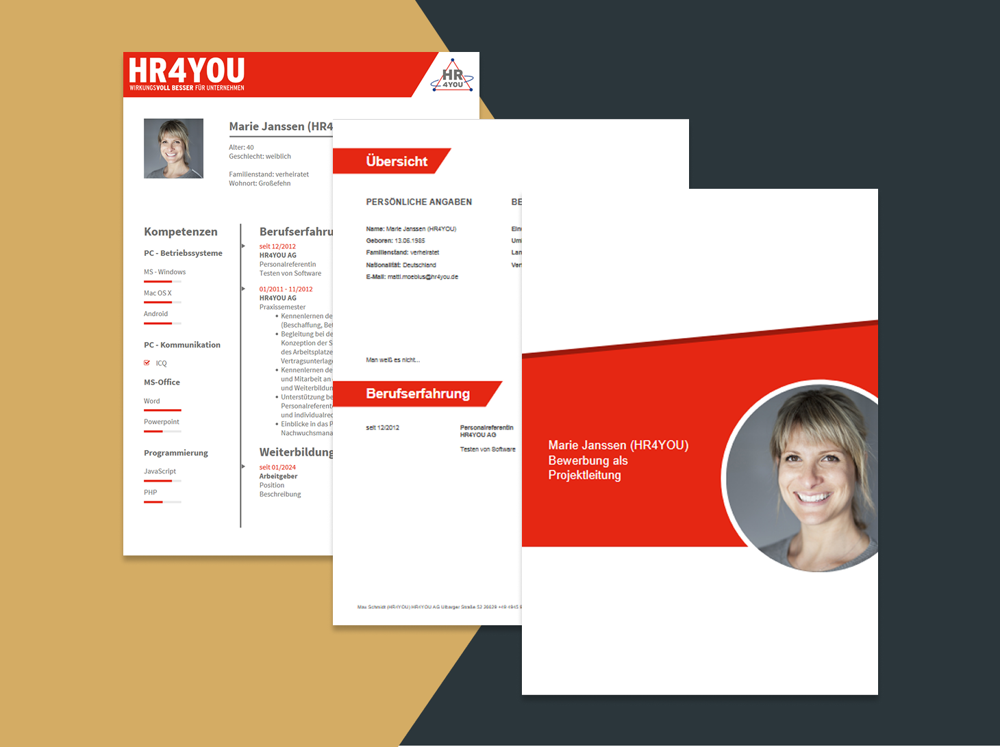
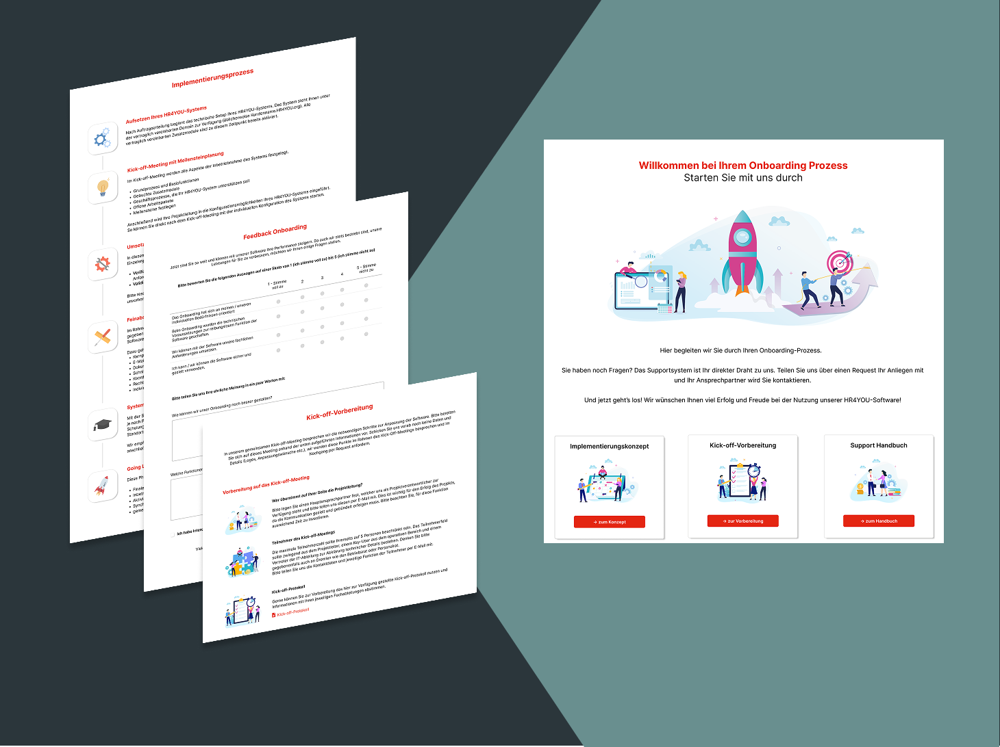

- Onboarding-Flow: Strategische Optimierung der Nutzerführung.
- Individualisierung: PDF-Profile exakt nach Kundenwünschen angepasst.
- Dokumenten-Standards: Sicherung einer konsistenten Ausgabequalität.

Dynamische Anzeigentemplates
Entwicklung modularer Vorlagen für die automatisierte Anzeigengenerierung. Umsetzung mit PHP, HTML und SCSS zur Sicherstellung eines konsistenten Markendesigns bei maximaler technischer Flexibilitä.

System-Standardprofile (PDF)
Konzeption und technische Umsetzung von vorgefertigten Profilvorlagen für die Systemauslieferung. Realisierung einer konsistenten Dokumentenausgabe mittels PHP und TCPDF für eine universelle Nutzbarkeit.

Kunden-Onboarding-Seite
Web-Umsetzung eines zentralen Informationsportals zur Nutzerführung. Fokus auf intuitive Strukturierung, um den Systemstart für Neukunden zu optimieren.